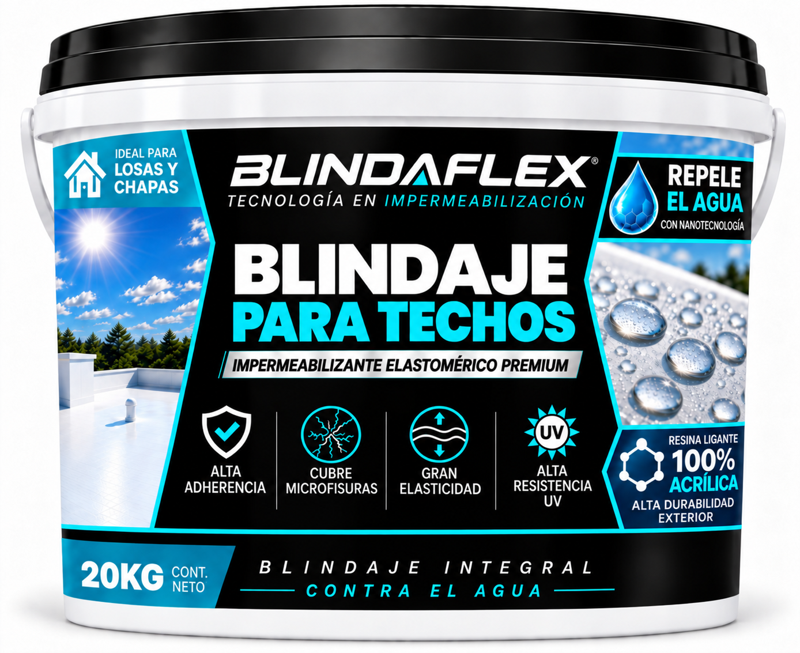

Blindaje para Techos: impermeabilizante elastomérico premium
Impermeabilización de alta performance desarrollada para formar una película continua, flexible y resistente sobre techos expuestos al agua y a las condiciones exteriores.
Una solución impermeabilizante destinada específicamente a la protección de superficies de techo.
Impermeabilización elastomérica para techos
Blindaje para Techos está formulado para crear una película impermeabilizante continua y flexible sobre la cubierta. Su elasticidad permite acompañar determinados movimientos del sustrato y contribuir a mantener protegidas microfisuras dentro de los límites previstos por el sistema.
Su combinación de adherencia, elasticidad, resistencia exterior e hidrorrepelencia está orientada a mantener la continuidad de la protección frente al agua.
PELÍCULA CONTINUA + ELASTICIDAD + RESISTENCIA EXTERIORResina ligante 100% acrílica
Blindaje para Techos utiliza resina ligante 100% acrílica, seleccionada para aplicaciones exteriores exigentes donde resultan especialmente importantes la estabilidad frente a radiación UV, la elasticidad, la adherencia y la durabilidad de la película.
Cuando Blindaflex declara 'resina ligante 100% acrílica', identifica expresamente la naturaleza de la resina ligante utilizada en la formulación.
Propiedades que trabajan en conjunto
ALTA ADHERENCIA
Favorece el anclaje sobre superficies correctamente preparadas.
CUBRE MICROFISURAS
Contribuye a proteger pequeñas discontinuidades presentes en la cubierta.
GRAN ELASTICIDAD
La película puede deformarse y acompañar determinados movimientos de la superficie.
ALTA RESISTENCIA UV
Diseñado para permanecer expuesto a radiación solar y condiciones exteriores.
HIDRORREPELENCIA
Favorece la formación y el escurrimiento de gotas sobre la película.
DURABILIDAD EXTERIOR
Formulado para las exigencias propias de una cubierta expuesta a la intemperie.
Blindaje integral contra el agua
En Blindaje para Techos, estas propiedades funcionan de manera complementaria. La película continua protege la cubierta, la elasticidad ayuda a acompañar determinados movimientos, la cobertura de microfisuras reduce puntos vulnerables y la hidrorrepelencia mejora el comportamiento superficial frente al agua.
BLINDAJE INTEGRAL: distintas propiedades trabajando como un sistema de protección.
Datos de Uso
Rendimiento y Esquema de aplicación
RENDIMIENTO
1 kg rinde 1 m² de trabajo terminadoEl consumo real puede aumentar según absorción, rugosidad, estado de la superficie y método de aplicación.
ESQUEMA DE APLICACIÓN
El número final de manos puede variar según absorción, rugosidad y características de la superficie. El criterio principal es completar correctamente el consumo total recomendado.
ANTES DE APLICAR
Homogeneizar completamente el producto antes de comenzar la aplicación y volver a mezclar si permaneció en reposo.
APLICACIÓN
Blindaje para Techos puede aplicarse con rodillo, pincel o equipo airless adecuado para este tipo de recubrimientos.
SECADO Y CONDICIONES CLIMÁTICAS
SECADO ENTRE MANOS: 6 A 8 HORASEl tiempo puede variar según temperatura, humedad ambiente, ventilación y condiciones climáticas.
NO APLICAR CON PRONÓSTICO DE LLUVIA
No aplicar cuando exista probabilidad de lluvia durante el trabajo o dentro de las 24 horas posteriores a la última mano.
No aplicar sobre superficies mojadas, con agua acumulada o bajo condiciones climáticas desfavorables.
Preparación de la superficie
- La superficie debe estar limpia, seca, firme y libre de polvo, grasa, hongos, verdín, partículas sueltas y recubrimientos mal adheridos.
- Reparar previamente grietas, juntas, encuentros constructivos y sectores deteriorados antes de comenzar la impermeabilización.
- Una correcta preparación de la superficie es fundamental para favorecer la adherencia y el desempeño del sistema.
PRESENTACIONES
* El rendimiento depende de respetar el consumo mínimo de 1 kg/m² y puede variar según la superficie.
3 COLORES PARA TU TECHO
* Los colores visualizados en pantalla son orientativos y pueden variar según la configuración del dispositivo.
Blindaje para Techos o Blindaje Reflectivo: ¿cuál elegir?
Ambos productos están desarrollados para impermeabilizar y proteger techos mediante una película elastomérica resistente a la exposición exterior. La diferencia principal es que Blindaje Reflectivo incorpora además una función específicamente orientada a favorecer la reflexión de radiación solar.
BLINDAJE PARA TECHOS
Impermeabilización elastomérica premium para protección general de techos.
- impermeabilización elastomérica;
- alta adherencia;
- gran elasticidad;
- cobertura de microfisuras;
- alta resistencia UV;
- hidrorrepelencia;
- alta durabilidad exterior.
Disponible en blanco, gris y rojo cerámico.
BLINDAJE REFLECTIVO
Todas las prestaciones de un sistema impermeabilizante elastomérico, más tecnología reflectiva.
- impermeabilización elastomérica;
- alta adherencia;
- gran elasticidad;
- cobertura de microfisuras;
- alta resistencia UV;
- hidrorrepelencia;
- alta durabilidad exterior.
- favorece la reflexión de radiación solar;
- contribuye a reducir la absorción de energía de la cubierta;
- terminación blanca orientada a maximizar el comportamiento reflectivo.
Blindaje Reflectivo no reemplaza la función impermeabilizante: la conserva y suma una prestación adicional frente a la radiación solar.
Elegí Blindaje para Techos cuando buscás impermeabilización elastomérica premium con distintas opciones de color. Elegí Blindaje Reflectivo cuando buscás esas mismas prestaciones de protección y además querés favorecer la reflexión de radiación solar.
Ficha técnica
Consultá especificaciones, preparación de superficie y recomendaciones completas de aplicación de Blindaje para Techos.
Descargar Ficha TécnicaPreguntas frecuentes sobre Blindaje para Techos
Protección elastomérica para tu techo
Blindaje para Techos combina resina ligante 100% acrílica, gran elasticidad, alta adherencia, hidrorrepelencia y resistencia UV en un sistema desarrollado para proteger cubiertas expuestas al exterior.